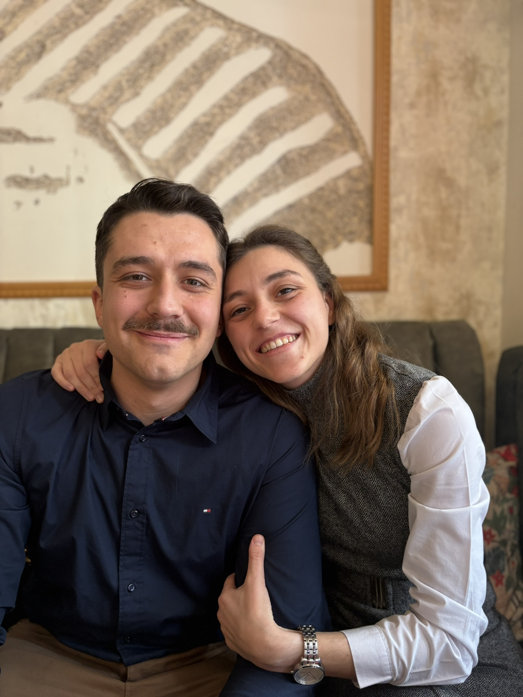

Γάμος
16:3027 Δεκεμβρίου 2026
Πατήστε για να ανοίξετε

 26
26
…καὶ εὐαρεστήσαντες
ἐνώπιόν σου
λάμψωσιν ὡς φωστῆρες
ἐν οὐρανῷ…

π. Δημητρίου & ΙφιγένειαςΠαπαγεωργίουΧρήστου & ΦωτεινήςΤζίκα
Χρήστος Παπαχαραλάμπους

27 Δεκεμβρίου 2026

Θα ακολουθήσει δεξίωση στο
Για την παρουσία σας στο τραπέζι,
συμπληρώστε την παρακάτω φόρμα.
Σε περίπτωση απουσίας σας ενημερώστε μας έως 10/12.
Στο νέο ξεκίνημα της ζωής μας
η παρουσία, οι ευχές και οι προσευχές σας
είναι για εμάς το πολυτιμότερο δώρο.
ΠΡΟΑΙΡΕΤΙΚΗ ΛΙΣΤΑ ΓΑΜΟΥ
Πατήστε για αντιγραφή
Πατήστε για αντιγραφή
Σας ευχαριστούμε θερμά.
Βοηθήστε μας να δημιουργήσουμε ένα μοναδικό ψηφιακό άλμπουμ, γεμάτο χαμόγελα, συγκινήσεις και αυθόρμητες στιγμές!